Rationale
Who this is for
This guide is mostly for me. I’m trying to get better at documenting all the tech stuff I do on my home system, both to ensure I have a decent understanding of what I’m doing, and also to ensure I can reproduce it if I need to rebuild at some point in the future. This guide is heavily reliant on the guidance from Mark Furneaux in his YouTube series on the topic. The first video in that playlist provides a good overview of what pfsense is and why you might want to install it. If you watch that video and think you might like to install pfsense, but don’t want to watch about 9 hours of YouTube to figure out how to set it up, this might come in handy for you as well.
What this will cover
At a high level this will cover installing and configuring a pfsense box along with a Unifi wireless access point. Hardware selection is not covered here. The table of contents describes the sections of pfsense settings and applications that will be set up over the course of this guide.
Resources
Besides the excellent pfsense documentation I relied heavily on a series of YouTube videos from Mark Furneaux.
Base Install
The instructions on the install page are pretty good. The link for creating install media is also comprehensive. Since I didn’t deviate from their instructions in any meaningful way and there’s no reason to expect their documentation to go away I’m not going to reiterate the steps in any detail here. Basically flash the installer image to a USB key, boot that in your system and follow the wizard.
Wizard Setup
Next we go through the Wizard. I did the bare minimum of config here, preferring to leave the details for once I had a minimally working system set up. From a browser head to the default IP. You’ll get prompted that the connection is not secure. We’ll deal with certificates later. For now just hit advanced and proceed.
The first thing you should see is a login page. The default login is admin/pfsense. After that there’s a welcome page for the Wizard, followed by a page describing all the support options that are available. After that we get to the first page to actually populate.
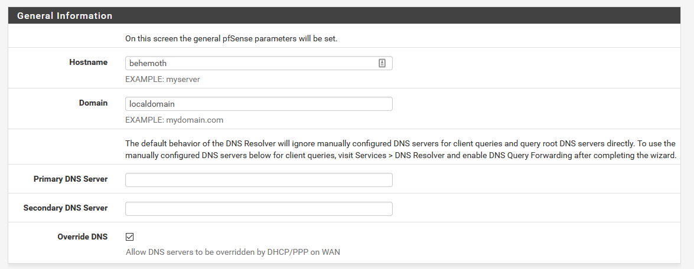
All that’s necessary on this page is to give your router a name (I went with behemoth because I’m doing an expanse themed naming scheme). You also need to name your local domain. localcomain seems fine so I left it at that. DNS can be configured here but I left it alone and will configure it later.
Next is time zone, left to default NTP for now but set to my timezone.
My WAN interface is DHCP so I just leave all default.
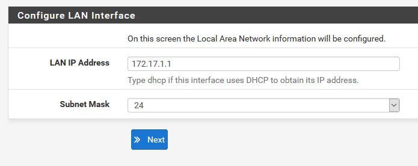
The next step is to configure your LAN interface. You can leave it on 192.168.1.1 but I prefer to change it. The reason is that 192.168.[1/0].1 is a super common address range. If I use that range on my LAN, and then try and VPN back into it from someone else’s network using the same address range it tends to cause issues. The pfsense book has a good chapter on this. The 24 subnet mask is equivalent to 255.255.255.0. If you haven’t seen that notation before, or need to brush up the pfsense book also has a decent high level introduction.
Next step is to update the admin password - make it something secure and save it somewhere. I use LastPass for everything password related.
Wizard over! You’ll be prompted to reload, and if you changed the LAN IP you might need to release and renew your IP again before it will load up.
Navigate to https://behemoth (or whatever you picked for your hostname)- connected!
WiFi
So getting WiFi going was a bit of an adventure. This might be too niche for anyone else to benefit from, but I’m sure going to appreciate having it written down somewhere if I need to do it again. My WAP is a Ubiquiti Unifi AP AC Lite. All Ubiquiti hardware is managed through a controller. You can buy a physical device from them to serve this function, but they’re at least $130 so nuts to that. When I was planning out this build I read that you can install the controller software right on your pfsense box. That seemed ideal… until I tried it. After much weeping and gnashing of teeth I ended up burning my pfsense install to the ground and starting over. Given I actually hadn’t done much on the setup yet and messing around with getting the controller working involved installing a bunch of software I didn’t want any more and wasn’t sure I could get rid of that seemed like the safest bet. On to plan B. Eventually I’ll probably get a Raspberry pi as a dedicated host for the controller, but for now I don’t have a spare one so I decided to throw it on my server.
The saints over at LinuxServer have a container made so I went with that. After resolving a port conflict with one of my other services the controller launched just fine.
After navigating to my server’s IP on port 8443 I got a login prompt where I had to name my controller and then sign into (or create) my ubiquiti account. I set everything to auto optimize and to create one SSID for both 5GHz and 2.4GHz networks.
Up to here everything is super slick, but then I hit problems.
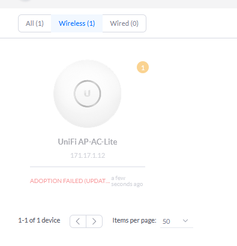
My WAP showed up on the home page but it was just stuck on “Adopting (Update Required)”. Initial googling suggested that I would have to manually push a firmware update before I could adopt. This didn’t actually solve the issue, but just for reference here’s how you do that:
Check your router to determine what IP the WAP has been assigned. Google for the firmware for your hardware, on the Unifi page you’ll get a download icon and after accepting the terms you’ll get a direct download link. SSH into the WAP, the default username and password are both ubnt.
curl <firmware_binary_link_location> -o /tmp/fwupdate.bin
syswrapper.sh upgrade2 &The prompt on the WAP should now show the latest firmware version when you SSH back in. Again, this didn’t fix my issue, but knowing how to push firmware updates might come in handy later so I wanted it recorded.
The actual solution was to hard code where the controller should be broadcasting from. Here’s the forum post describing it. I had to put in the IP of my server for some reason. I could resolve it by hostname from my other PC, but the WAP itself could only ping it based on the IP. I’ll revisit this after I mess with DNS more later on pfsense.
First click settings in the lower left of the controller page:
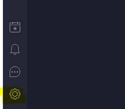
Then on the controller page hard code the IP and host and set “Override host with controller hostname/IP”. I also set “Make controller discoverable on the L2 network” since it’s a locally hosted controller, but I’m not sure that actually made a difference. Doesn’t hurt.
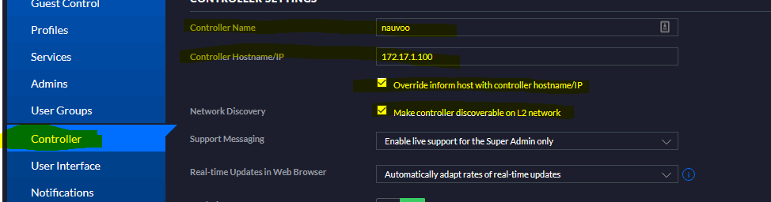
For now I’m online!
Addendum
I have an old Kobo reader. After switching to the Unifi AP I couldn’t get it on the WiFi. An even older Kindle would connect, and my newer Kobo connected after manually entering the SSID, but no luck with the older one. Eventually I found this reddit thread with the solution. From the Unifi control panel I went to settings -> wireless networks -> <my SSID> -> advanced and unchecked “enable minimum data rate control” for the 2G network. After applying that and trying to connect a few more times I made it online with the Kobo.
WebUI Overview and general setup
This section of the guide will follow along with part 5.1 of Mark Furneaux’s guide. The video is about 4 years old and based on pfsense 2.3 whereas I’m using 2.4.5, so there may be some minor cosmetic differences. I also want a text representation of his guide, as it will be easier to refer back to later.
System / General Setup
Only two minor changes here: 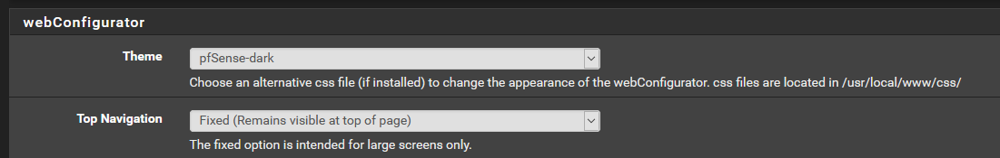
System / Advanced / Admin Access
Turn off https since we don’t have a certificate authority (maybe I’ll figure that part out later)
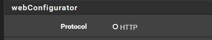
Change browser tab text so I know what page each tab is on.
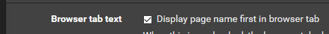
Enable SSH and change the default port to 2222 (security through obscurity). I’m going to set up keys later, for now let it work with a password but come back and update this later.
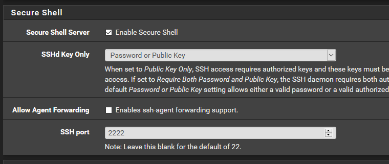
Fun piece of trivia, right as I enabled this my web front-end froze. The actual router was still functioning, but I couldn’t get any web admin. Part of it was that I had to switch from https to http in the URL, but even after that I would hit the login, it would accept my password, and just take me back to the login page. I found this reddit thread which had the same issue. For me I could connect in using a private browsing window, which led me to try restarting my browser, which fixed it. Computers…
System / Advanced / Firewall & NAT
Set Firewall optimization to conservative. I have plenty of CPU and RAM for the size of my network, so why not give idle connections a little longer to hang out? Apparently this can improve VOIP performance.
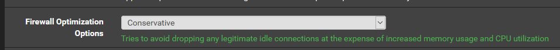
System / Advanced / Networking
For now I’m just going to disable IPv6. I don’t think my ISP supports it and I don’t see the need for it on my LAN. Maybe I’ll revisit that later, but for now turning it off seems like the safer approach.
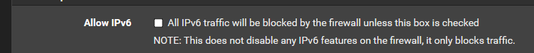
Set everything possible to work on hardware. Given that I have Intel NICs in my router I think I can safely run all of these things. I ran iperf3 between two wired connections as well as speedtest before enabling the settings and then again after. Note that you have to reboot after changing these settings. After the reboot performance was essentially unchanged so I took that as a good sign and kept the settings.
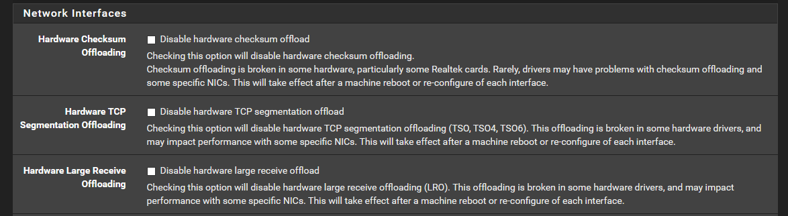
System / Advanced / Miscellaneous
I don’t expect a lot of super heavy CPU needs on this system, so I might as well save some power and heat. I’ll put it on Adaptive to start, but I’ll check out Hiadaptive if some services seem to chug.
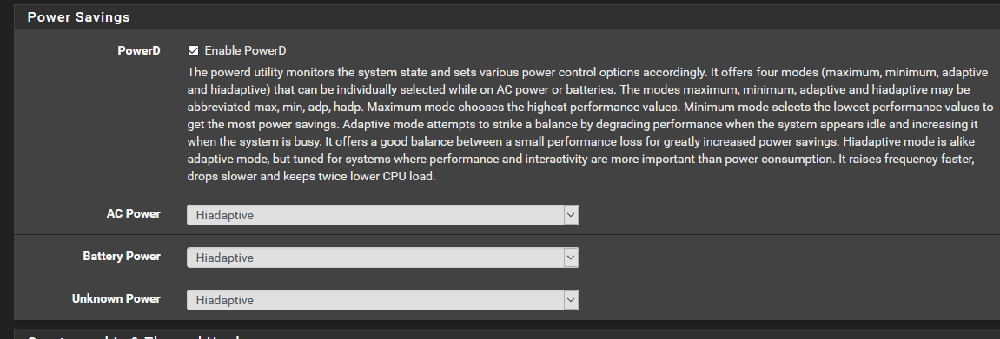
My CPU supports AES-NI and I’ll want that enabled for better VPN performance later.
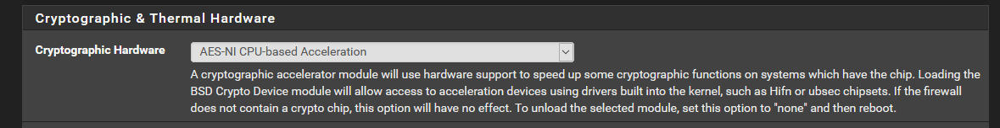
System / Advanced / Notifications
I want email notifications if something gets borked on my router. I don’t want to use my actual gmail address to send these notifications though, as I’d like to keep the security on it a lot more locked down. I created a new gmail account just for the router, and then in my account settings (for the router email do not do this for your actual email) I set “less secure apps” to on so that I could enable sending emails with the following settings:
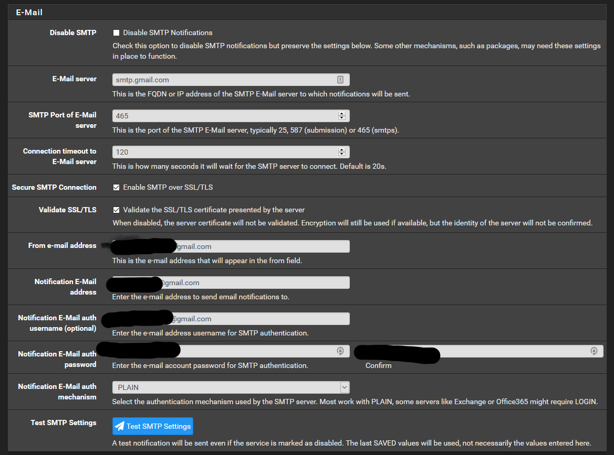
After all that I hit “test SMTP settings” and received an email informing me it worked. Hurray!
Interfaces / WAN (and LAN)
I’m going to disable IPv6 here since as I discussed I don’t want to use it.
For the LAN I first have to disable the DHCPv6 service:
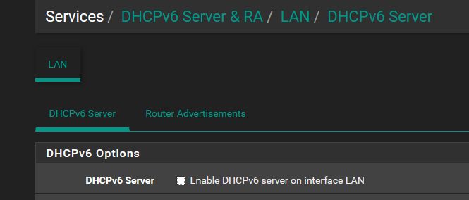
And then on each respective interface’s page I can disable IPv6
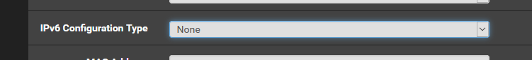
Dashboard
Let’s add some widgets! Everyone loves widgets.
Add S.M.A.R.T status so I can see if my hard drive is failing. Services Status to see what’s running. Interface statistics to see if I’m getting any errors, and finally traffic graphs because who doesn’t like a nice live graph?
NTP Server
In addition to the pool server that’s automatically configured I’ll add a couple extras to improve synchronization:
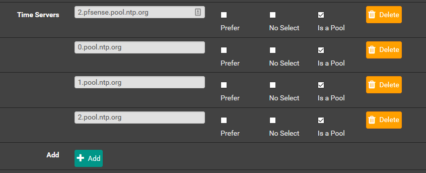
I’ll also enable RDD graphs because it might be fun to see a chart of time drift and recalibration for my system, why not?
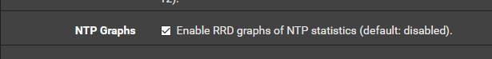
Now that I’ve got a nice fancy NTP server it will be nice to have all the machines on my network in sync for time by using the local pfsense NTP server.
On Windows (I always forget where to find this on Windows) you go to control panel -> date and time -> Internet Time -> Change settings -> change the server to your pfsense router. In my case that’s behemoth.localdomain. On windows at least it seems like you have to include the .localdomain part.
On Linux, following this digitalocean guide first I need to check if I’m using timesyncd (probably) or ntp:
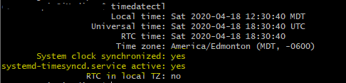
Since in this case I’m on timesyncd I’ll have to turn that service off, install ntp, enable it, and then point it to my pfsense box:
sudo timedatectl set-ntp no
# Confirm it was disabled
timedatectl
# Install ntp (this is for Ubuntu, similar for Arch or whatever)
sudo apt update && sudo apt install ntp -y
# Check that it loaded
ntpq -p
# check that timedatectl picked it up correctly
timedatectlAfter that I have to edit /etc/ntp.conf and replace the default pools with just one for my router. Finally I restart the NTP service with sudo service ntp restart and I can run ntpq -p one more time to make sure it’s pointing to my server. Everything looks good and now I’ve spent way more time than is reasonable making sure my clocks are perfectly in sync.
DHCP
There are two basic settings I want to change for DHCP. They’re both fairly minor. The first just sets it so that the logs for DHCP activity show my local time zone instead of UTC, which will make them easier to interpret. The second just lets me make pretty graphs if I want.
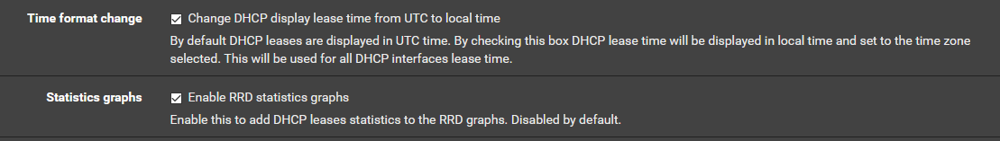
Since I went to all the trouble of setting up NTP, I’ll set up DHCP to push that server. Note that I had to use the IP of my router here, not the hostname. This doesn’t guarantee DHCP clients will use the NTP server, but it provides the option, so why not?
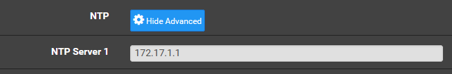
Static Mappings
For most of the devices on my network I’d like to give them easy to type and remember names, even if they don’t have the functionality to specify a hostname (or even if they do just to be safe). For one thing this makes it easy to connect to devices, but even for things I don’t want to connect to (like an e-reader) it’s nice to give them an obvious name. That way if I’m looking at the DHCP leases on my network it will be easier to notice a new device. To do this there are two steps. The first is adding a DHCP static mapping for each device, and the second is enabling DNS to resolve those names (skipping ahead a bit since DNS is next). While you can do static mappings from the DHCP services page, it’s actually easier to do from the DHCP status page. Beside each device that’s connected there’s an “add static mask icon” which you can click. After that you just have to fill in an IP, the hostname you want, and an optional description:
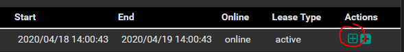
Since I’m going to set up most of my network this way I’m also going to narrow the range for regular DHCP leases to be handed out back on the DHCP Server service page:
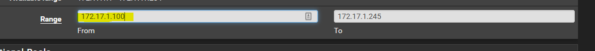
After this I’ll have to trigger a release/renew cycle for all devices on the network. The easiest way to do this is probably just reboot the router.
To set a proper hostname on a device here are the instructions relevant to me:
On Linux: edit /etc/hostname to be whatever you want the hostname to be.
On Android: Who knows? I can’t seem to make this give a proper name. Fortunately I can rely on the name from pfsense.
On Windows: Hit start, type “pc name” and select the entry that comes up, click “Rename this PC” and change it to whatever you want.
The last step is to set the DNS resolver to resolve these names. In services -> DNS resolver I check these two boxes:
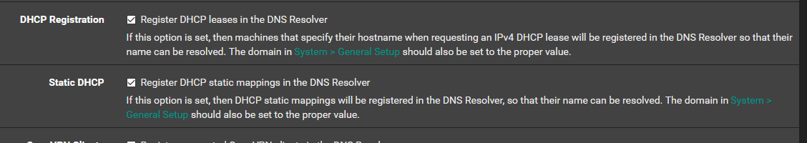
I think I only need the second one since I gave every client on my network a static lease, but the other one seems nice to have as well, so I’ll enable it.
DNS
To speed up name resolution, I’m going to run namebench, wait about an hour for it to complete, and then add the three DNS servers that it finds are the fastest, along with 8.8.8.8 which is Google’s DNS sever to my DNS server settings under System -> General setup:
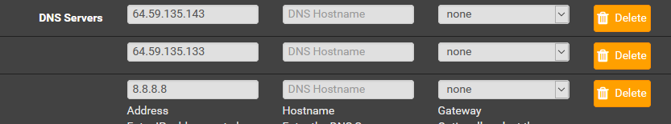
Respect to my ISP, all the fastest DNS servers are from them, and the two fastest are the ones I was assigned by DHCP. So this probably didn’t really do anything for me. Oh well.
I’m going to add a couple extra settings in services -> DNS resolver:
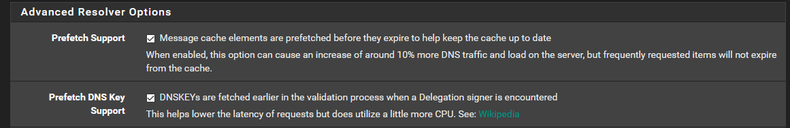
These should make response times for DNS queries a little faster at the cost of trivial CPU increase.
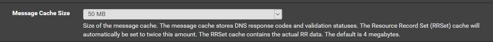
Why not store more names? I have tons of RAM.
Pfblocker - ad and geoblocking
Now we get to the fun stuff. This blocks ads/spam/etc at the network level, which is awesome.
I’m using this guide from Lawrence systems as the basis for my setup.
First thing’s first is to install the package, I went with the development version since that’s what was installed in the tutorial I was following:
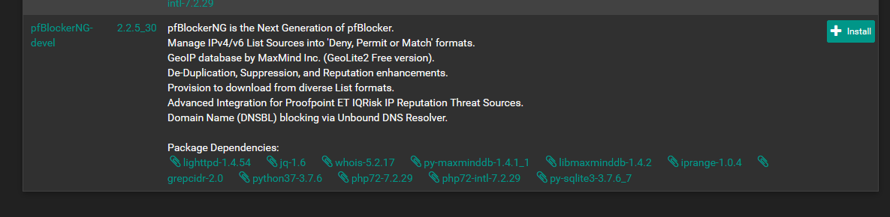
Head over to the settings page:
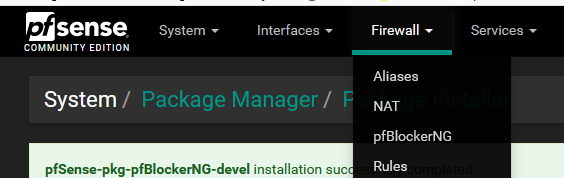
Then go through the wizard (this may come up automatically, it didn’t for me):
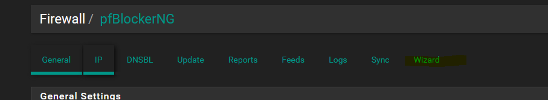
You get some warnings about how this will wipe your setup. That’s fine, we’re installing fresh. Then you get the first actual input prompt. The defaults are fine for me so I leave them:
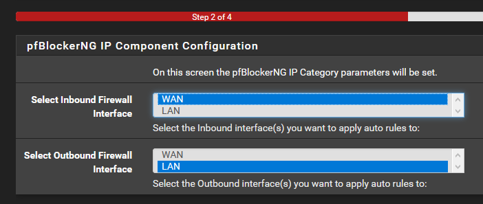
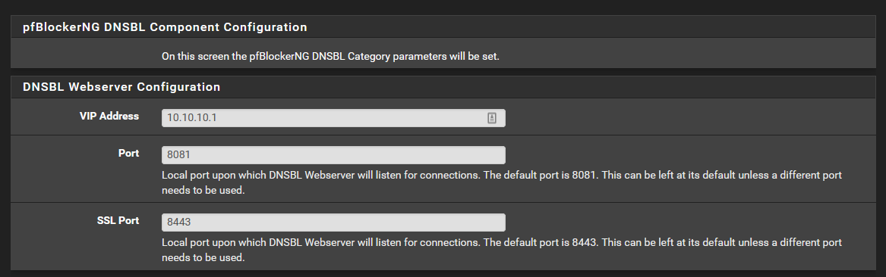
And that’s the wizard done! It should auto run an update to download all the blocklists and other goodness. Wait for that to finish.
Set up a MaxMind account for geoblocking and add in my license key:
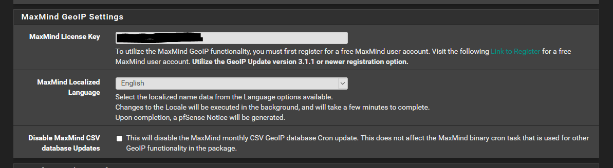
Enable floating rules (see the video for a discussion on why)
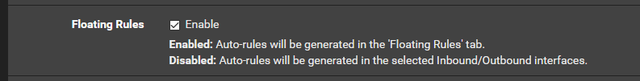
Enable kill states
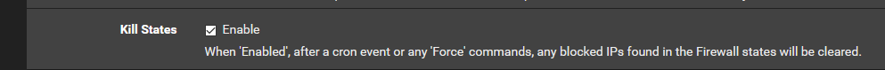
On geoblocking I’m going to deny both for top spammers, and then deny inbound from anywhere except North America. I’m not hosting anything, the only inbound traffic should be me connecting in on VPN (set up later). I’ll have to remember to change this if I go on vacation somewhere off continent. I’m also going to disable logging for now as I don’t really need to look at when this happens. If there’s an issue I’ll turn it back on.
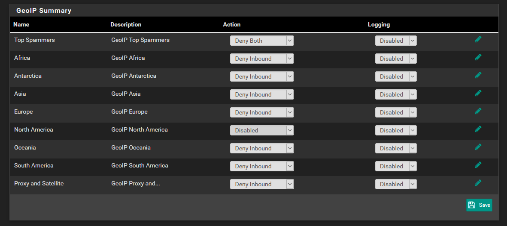
And that’s it! I can wait an hour or manually have it reload the settings:
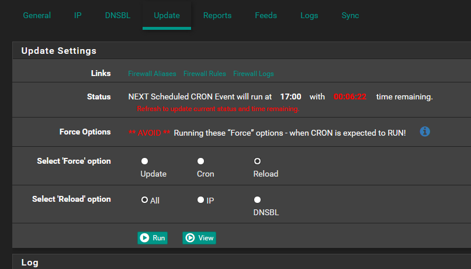
Dynamic DNS
Looks like VPN certs will want to be associated with a domain so I guess I should buy a domain and set up dynamic DNS first.
I bought my domain through namecheap. I also repointed this blog to use the domain, so if that all went smoothly this is being read at blog.ianpreston.ca.
Namecheap has good docs on setting up dynamic DNS. I enabled it following the instructions above (just hit enable under advanced DNS from your domain page).
Then I created an A+ DNS record
Then from pfsense I went to services -> Dynamic DNS and filled in the info for namecheap. Note that the domain part has to be your whole domain. At first I had just the ca part in there with my name and the subdomain in hostname and that didn’t work.
Refreshing the namecheap page confirmed that the dummy IP I’d entered had updated to the correct one, but a ping didn’t work right away. Presumably it takes a while for the DNS records to propagate.
OpenVPN - secure remote access
I’m following the docs and the book for this part. For now I’m going to use OpenVPN. At some point in the future I might switch to WireGuard as it seems to be the new hotness and is integrated into the latest Linux kernel, but I’m going to wait for official pfsense adoption on that one.
Basic Setup
- Under VPN -> OpenVPN head to the wizard tab.
- Leave authentication backend as Local User Access
- Fill in details for the CA. I left most things the default
- Same deal for the server cert, most options should persist from the CA
- Set up general server information
- I set hardware crypto on.
- Tunnel network has to be an IP range not used by your LAN, and it shouldn’t be a common one. Since my LAN uses 172.17.1.0/24 I went with 172.17.2.0/24
- I left redirect gateway off because I’m just trying to set up LAN access remotely, I don’t need all my traffic tunneled through here if I’m remote
- Local network points to my LAN so I can access it, so as described above that’s 172.17.1.0/24
- I set concurrent connections to 10. Probably more than I’ll need but why not?
- I enabled Inter-Client Communication
- I set the DNS default domain to localdomain
- I set DNS Server 1 to 172.17.1.1. These two options should allow me to access my servers by hostname even remotely
- I set the NTP server to 172.17.1.1 since I went to all the trouble of configuring it
- I don’t think I need NetBIOS or WINS so I left that blank
- Check boxes for both firewall rules
- Wizard complete, now I want to be able to export settings to clients, so over to System -> package manager and install
openvpn-client-export
DNS resolution
I’m not sure why I had to set this, but in order to get my client machines to be able to resolve hostnames of servers I had to go into Services -> DNS resolver -> General settings and check “Register connected OpenVPN clients in the DNS resolver”. The way they describe it really sounds like it should allow me to resolve client names, but it fixed my issue so whatever.
Create Users
System -> User Manager -> Add User. For users I’m going with the <person>_<device>_vpn naming convention. So for example my phone’s certificate will be ian_phone_vpn. I don’t add the user to admins, and I create and store a nice secure password with LastPass. Make a certificate for the user, all the default’s should be fine, just fill in an appropriately descriptive name.
Export keys to devices
Back to VPN -> OpenVPN -> Client Export Utility. Since I have dynamic DNS configured I changed over Host Name Resolution to my DynamicDNS name rather than my IP which is the default.
I didn’t mess with any of the defaults. I have the OpenVPN Connect app on my phone so I scrolled down to the user I just created for my phone and clicked “OpenVPN Connect (iOS/Android). Downloaded the file, transferred it to my phone, imported it in the app and was good to go.
Conclusion
That’s it for now! Everything seems to work well. I’ll update this guide if I make any further changes to my setup.
Last thing to do is go to Diagnostics -> Backup & Restore and save my config, just in case something bad happens.